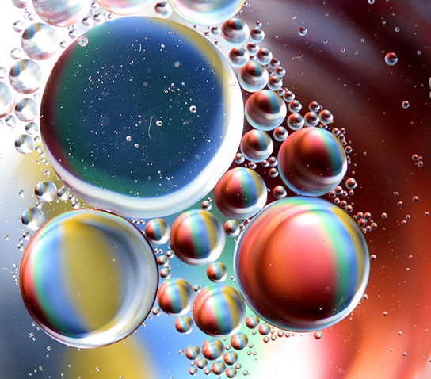
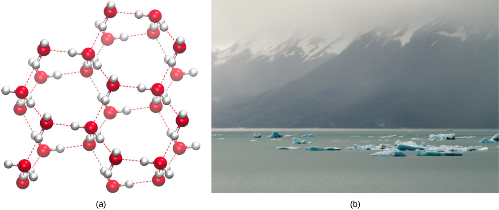
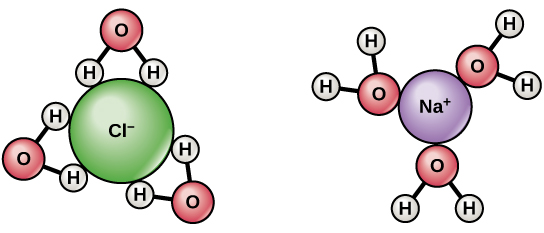
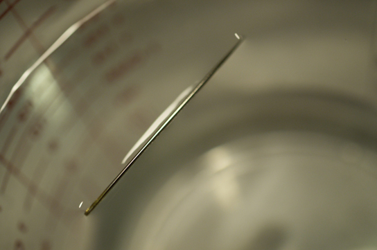
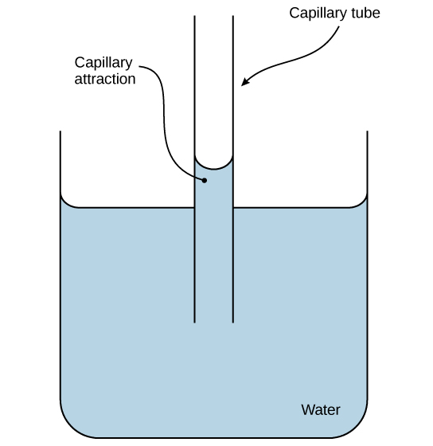
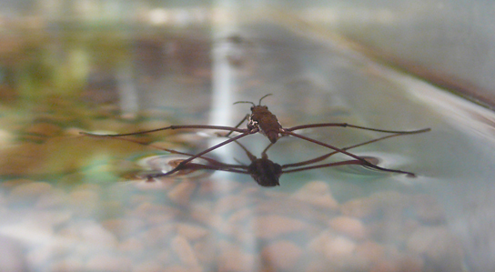
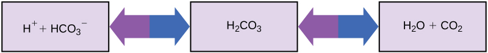

Describe the properties of water that are critical to maintaining life
Explain why water is an excellent solvent
Provide examples of water’s cohesive and adhesive properties
Discuss the role of acids, bases, and buffers in homeostasis
Why do scientists spend time looking for water on other planets? Why is water so important? It is because water is essential to life as we know it. Water is one of the more abundant molecules and the one most critical to life on Earth. Approximately 60–70 percent of the human body is made up of water. Without it, life as we know it simply would not exist.
The polarity of the water molecule and its resulting hydrogen bonding make water a unique substance with special properties that are intimately tied to the processes of life. Life originally evolved in a watery environment, and most of an organism’s cellular chemistry and metabolism occur inside the watery contents of the cell’s cytoplasm. Special properties of water are its high heat capacity and heat of vaporization, its ability to dissolve polar molecules, its cohesive and adhesive properties, and its dissociation into ions that leads to the generation of pH. Understanding these characteristics of water helps to elucidate its importance in maintaining life.
Water’s Polarity
One of water’s important properties is that it is composed of polar molecules: the hydrogen and oxygen within water molecules (H2O) form polar covalent bonds. While there is no net charge to a water molecule, the polarity of water creates a slightly positive charge on hydrogen and a slightly negative charge on oxygen, contributing to water’s properties of attraction. Water’s charges are generated because oxygen is more electronegative than hydrogen, making it more likely that a shared electron would be found near the oxygen nucleus than the hydrogen nucleus, thus generating the partial negative charge near the oxygen.
As a result of water’s polarity, each water molecule attracts other water molecules because of the opposite charges between water molecules, forming hydrogen bonds. Water also attracts or is attracted to other polar molecules and ions. A polar substance that interacts readily with or dissolves in water is referred to as hydrophilic (hydro- = “water”; -philic = “loving”). In contrast, non-polar molecules such as oils and fats do not interact well with water, as shown in [link] and separate from it rather than dissolve in it, as we see in salad dressings containing oil and vinegar (an acidic water solution). These nonpolar compounds are called hydrophobic (hydro- = “water”; -phobic = “fearing”).
Oil and water do not mix. As this macro image of oil and water shows, oil does not dissolve in water but forms droplets instead. This is due to it being a nonpolar compound. (credit: Gautam Dogra).

Water’s States: Gas, Liquid, and Solid
The formation of hydrogen bonds is an important quality of the liquid water that is crucial to life as we know it. As water molecules make hydrogen bonds with each other, water takes on some unique chemical characteristics compared to other liquids and, since living things have a high water content, understanding these chemical features is key to understanding life. In liquid water, hydrogen bonds are constantly formed and broken as the water molecules slide past each other. The breaking of these bonds is caused by the motion (kinetic energy) of the water molecules due to the heat contained in the system. When the heat is raised as water is boiled, the higher kinetic energy of the water molecules causes the hydrogen bonds to break completely and allows water molecules to escape into the air as gas (steam or water vapor). On the other hand, when the temperature of water is reduced and water freezes, the water molecules form a crystalline structure maintained by hydrogen bonding (there is not enough energy to break the hydrogen bonds) that makes ice less dense than liquid water, a phenomenon not seen in the solidification of other liquids.
Water’s lower density in its solid form is due to the way hydrogen bonds are oriented as it freezes: the water molecules are pushed farther apart compared to liquid water. With most other liquids, solidification when the temperature drops includes the lowering of kinetic energy between molecules, allowing them to pack even more tightly than in liquid form and giving the solid a greater density than the liquid.
The lower density of ice, illustrated and pictured in [link], an anomaly, causes it to float at the surface of liquid water, such as in an iceberg or in the ice cubes in a glass of ice water. In lakes and ponds, ice will form on the surface of the water creating an insulating barrier that protects the animals and plant life in the pond from freezing. Without this layer of insulating ice, plants and animals living in the pond would freeze in the solid block of ice and could not survive. The detrimental effect of freezing on living organisms is caused by the expansion of ice relative to liquid water. The ice crystals that form upon freezing rupture the delicate membranes essential for the function of living cells, irreversibly damaging them. Cells can only survive freezing if the water in them is temporarily replaced by another liquid like glycerol.
Hydrogen bonding makes ice less dense than liquid water. The (a) lattice structure of ice makes it less dense than the freely flowing molecules of liquid water, enabling it to (b) float on water. (credit a: modification of work by Jane Whitney, image created using Visual Molecular Dynamics (VMD) software1; credit b: modification of work by Carlos Ponte)

Link to Learning
Click here to see a 3-D animation of the structure of an ice lattice. (Image credit: Jane Whitney. Image created using Visual Molecular Dynamics VMD software.2)
Water’s High Heat Capacity
Water’s high heat capacity is a property caused by hydrogen bonding among water molecules. Water has the highest specific heat capacity of any liquids. Specific heat is defined as the amount of heat one gram of a substance must absorb or lose to change its temperature by one degree Celsius. For water, this amount is one calorie. It therefore takes water a long time to heat and long time to cool. In fact, the specific heat capacity of water is about five times more than that of sand. This explains why the land cools faster than the sea. Due to its high heat capacity, water is used by warm blooded animals to more evenly disperse heat in their bodies: it acts in a similar manner to a car’s cooling system, transporting heat from warm places to cool places, causing the body to maintain a more even temperature.
Water’s Heat of Vaporization
Water also has a high heat of vaporization, the amount of energy required to change one gram of a liquid substance to a gas. A considerable amount of heat energy (586 cal) is required to accomplish this change in water. This process occurs on the surface of water. As liquid water heats up, hydrogen bonding makes it difficult to separate the liquid water molecules from each other, which is required for it to enter its gaseous phase (steam). As a result, water acts as a heat sink or heat reservoir and requires much more heat to boil than does a liquid such as ethanol (grain alcohol), whose hydrogen bonding with other ethanol molecules is weaker than water’s hydrogen bonding. Eventually, as water reaches its boiling point of 100° Celsius (212° Fahrenheit), the heat is able to break the hydrogen bonds between the water molecules, and the kinetic energy (motion) between the water molecules allows them to escape from the liquid as a gas. Even when below its boiling point, water’s individual molecules acquire enough energy from other water molecules such that some surface water molecules can escape and vaporize: this process is known as evaporation.
The fact that hydrogen bonds need to be broken for water to evaporate means that a substantial amount of energy is used in the process. As the water evaporates, energy is taken up by the process, cooling the environment where the evaporation is taking place. In many living organisms, including in humans, the evaporation of sweat, which is 90 percent water, allows the organism to cool so that homeostasis of body temperature can be maintained.
Water’s Solvent Properties
Since water is a polar molecule with slightly positive and slightly negative charges, ions and polar molecules can readily dissolve in it. Therefore, water is referred to as a solvent, a substance capable of dissolving other polar molecules and ionic compounds. The charges associated with these molecules will form hydrogen bonds with water, surrounding the particle with water molecules. This is referred to as a sphere of hydration, or a hydration shell, as illustrated in [link] and serves to keep the particles separated or dispersed in the water.
When ionic compounds are added to water, the individual ions react with the polar regions of the water molecules and their ionic bonds are disrupted in the process of dissociation. Dissociation occurs when atoms or groups of atoms break off from molecules and form ions. Consider table salt (NaCl, or sodium chloride): when NaCl crystals are added to water, the molecules of NaCl dissociate into Na+ and Cl– ions, and spheres of hydration form around the ions, illustrated in [link]. The positively charged sodium ion is surrounded by the partially negative charge of the water molecule’s oxygen. The negatively charged chloride ion is surrounded by the partially positive charge of the hydrogen on the water molecule.
When table salt (NaCl) is mixed in water, spheres of hydration are formed around the ions.

Water’s Cohesive and Adhesive Properties
Have you ever filled a glass of water to the very top and then slowly added a few more drops? Before it overflows, the water forms a dome-like shape above the rim of the glass. This water can stay above the glass because of the property of cohesion. In cohesion, water molecules are attracted to each other (because of hydrogen bonding), keeping the molecules together at the liquid-gas (water-air) interface, although there is no more room in the glass.
Cohesion allows for the development of surface tension, the capacity of a substance to withstand being ruptured when placed under tension or stress. This is also why water forms droplets when placed on a dry surface rather than being flattened out by gravity. When a small scrap of paper is placed onto the droplet of water, the paper floats on top of the water droplet even though paper is denser (heavier) than the water. Cohesion and surface tension keep the hydrogen bonds of water molecules intact and support the item floating on the top. It’s even possible to “float” a needle on top of a glass of water if it is placed gently without breaking the surface tension, as shown in [link].
The weight of the needle is pulling the surface downward; at the same time, the surface tension is pulling it up, suspending it on the surface of the water and keeping it from sinking. Notice the indentation in the water around the needle. (credit: Cory Zanker)

These cohesive forces are related to water’s property of adhesion, or the attraction between water molecules and other molecules. This attraction is sometimes stronger than water’s cohesive forces, especially when the water is exposed to charged surfaces such as those found on the inside of thin glass tubes known as capillary tubes. Adhesion is observed when water “climbs” up the tube placed in a glass of water: notice that the water appears to be higher on the sides of the tube than in the middle. This is because the water molecules are attracted to the charged glass walls of the capillary more than they are to each other and therefore adhere to it. This type of adhesion is called capillary action, and is illustrated in [link].
Capillary action in a glass tube is caused by the adhesive forces exerted by the internal surface of the glass exceeding the cohesive forces between the water molecules themselves. (credit: modification of work by Pearson-Scott Foresman, donated to the Wikimedia Foundation)

Why are cohesive and adhesive forces important for life? Cohesive and adhesive forces are important for the transport of water from the roots to the leaves in plants. These forces create a “pull” on the water column. This pull results from the tendency of water molecules being evaporated on the surface of the plant to stay connected to water molecules below them, and so they are pulled along. Plants use this natural phenomenon to help transport water from their roots to their leaves. Without these properties of water, plants would be unable to receive the water and the dissolved minerals they require. In another example, insects such as the water strider, shown in [link], use the surface tension of water to stay afloat on the surface layer of water and even mate there.
Water’s cohesive and adhesive properties allow this water strider (Gerris sp.) to stay afloat. (credit: Tim Vickers)

pH, Buffers, Acids, and Bases
The pH of a solution indicates its acidity or alkalinity.
litmus or pH paper, filter paper that has been treated with a natural water-soluble dye so it can be used as a pH indicator, to test how much acid (acidity) or base (alkalinity) exists in a solution. You might have even used some to test whether the water in a swimming pool is properly treated. In both cases, the pH test measures the concentration of hydrogen ions in a given solution.
Hydrogen ions are spontaneously generated in pure water by the dissociation (ionization) of a small percentage of water molecules into equal numbers of hydrogen (H+) ions and hydroxide (OH-) ions. While the hydroxide ions are kept in solution by their hydrogen bonding with other water molecules, the hydrogen ions, consisting of naked protons, are immediately attracted to un-ionized water molecules, forming hydronium ions (H30+). Still, by convention, scientists refer to hydrogen ions and their concentration as if they were free in this state in liquid water.
The concentration of hydrogen ions dissociating from pure water is 1 × 10-7 moles H+ ions per liter of water. Moles (mol) are a way to express the amount of a substance (which can be atoms, molecules, ions, etc), with one mole being equal to 6.02 x 1023 particles of the substance. Therefore, 1 mole of water is equal to 6.02 x 1023 water molecules. The pH is calculated as the negative of the base 10 logarithm of this concentration. The log10 of 1 × 10-7 is -7.0, and the negative of this number (indicated by the “p” of “pH”) yields a pH of 7.0, which is also known as neutral pH. The pH inside of human cells and blood are examples of two areas of the body where near-neutral pH is maintained.
Non-neutral pH readings result from dissolving acids or bases in water. Using the negative logarithm to generate positive integers, high concentrations of hydrogen ions yield a low pH number, whereas low levels of hydrogen ions result in a high pH. An acid is a substance that increases the concentration of hydrogen ions (H+) in a solution, usually by having one of its hydrogen atoms dissociate. A base provides either hydroxide ions (OH–) or other negatively charged ions that combine with hydrogen ions, reducing their concentration in the solution and thereby raising the pH. In cases where the base releases hydroxide ions, these ions bind to free hydrogen ions, generating new water molecules.
The stronger the acid, the more readily it donates H+. For example, hydrochloric acid (HCl) completely dissociates into hydrogen and chloride ions and is highly acidic, whereas the acids in tomato juice or vinegar do not completely dissociate and are considered weak acids. Conversely, strong bases are those substances that readily donate OH– or take up hydrogen ions. Sodium hydroxide (NaOH) and many household cleaners are highly alkaline and give up OH– rapidly when placed in water, thereby raising the pH. An example of a weak basic solution is seawater, which has a pH near 8.0, close enough to neutral pH that marine organisms adapted to this saline environment are able to thrive in it.
The pH scale is, as previously mentioned, an inverse logarithm and ranges from 0 to 14 ([link]). Anything below 7.0 (ranging from 0.0 to 6.9) is acidic, and anything above 7.0 (from 7.1 to 14.0) is alkaline. Extremes in pH in either direction from 7.0 are usually considered inhospitable to life. The pH inside cells (6.8) and the pH in the blood (7.4) are both very close to neutral. However, the environment in the stomach is highly acidic, with a pH of 1 to 2. So how do the cells of the stomach survive in such an acidic environment? How do they homeostatically maintain the near neutral pH inside them? The answer is that they cannot do it and are constantly dying. New stomach cells are constantly produced to replace dead ones, which are digested by the stomach acids. It is estimated that the lining of the human stomach is completely replaced every seven to ten days.
The pH scale measures the concentration of hydrogen ions (H+) in a solution. (credit: modification of work by Edward Stevens)
Link to Learning
Watch this video for a straightforward explanation of pH and its logarithmic scale.
So how can organisms whose bodies require a near-neutral pH ingest acidic and basic substances (a human drinking orange juice, for example) and survive? Buffers are the key. Buffers readily absorb excess H+ or OH–, keeping the pH of the body carefully maintained in the narrow range required for survival. Maintaining a constant blood pH is critical to a person’s well-being. The buffer maintaining the pH of human blood involves carbonic acid (H2CO3), bicarbonate ion (HCO3–), and carbon dioxide (CO2). When bicarbonate ions combine with free hydrogen ions and become carbonic acid, hydrogen ions are removed, moderating pH changes. Similarly, as shown in [link], excess carbonic acid can be converted to carbon dioxide gas and exhaled through the lungs. This prevents too many free hydrogen ions from building up in the blood and dangerously reducing the blood’s pH. Likewise, if too much OH– is introduced into the system, carbonic acid will combine with it to create bicarbonate, lowering the pH. Without this buffer system, the body’s pH would fluctuate enough to put survival in jeopardy.
This diagram shows the body’s buffering of blood pH levels. The blue arrows show the process of raising pH as more CO2 is made. The purple arrows indicate the reverse process: the lowering of pH as more bicarbonate is created.

Other examples of buffers are antacids used to combat excess stomach acid. Many of these over-the-counter medications work in the same way as blood buffers, usually with at least one ion capable of absorbing hydrogen and moderating pH, bringing relief to those that suffer “heartburn” after eating. The unique properties of water that contribute to this capacity to balance pH—as well as water’s other characteristics—are essential to sustaining life on Earth.
Water has many properties that are critical to maintaining life. It is a polar molecule, allowing for the formation of hydrogen bonds. Hydrogen bonds allow ions and other polar molecules to dissolve in water. Therefore, water is an excellent solvent. The hydrogen bonds between water molecules cause the water to have a high heat capacity, meaning it takes a lot of added heat to raise its temperature. As the temperature rises, the hydrogen bonds between water continually break and form anew. This allows for the overall temperature to remain stable, although energy is added to the system. Water also exhibits a high heat of vaporization, which is key to how organisms cool themselves by the evaporation of sweat. Water’s cohesive forces allow for the property of surface tension, whereas its adhesive properties are seen as water rises inside capillary tubes. The pH value is a measure of hydrogen ion concentration in a solution and is one of many chemical characteristics that is highly regulated in living organisms through homeostasis. Acids and bases can change pH values, but buffers tend to moderate the changes they cause. These properties of water are intimately connected to the biochemical and physical processes performed by living organisms, and life would be very different if these properties were altered, if it could exist at all.
Review Questions
Which of the following statements is not true?
Water is polar.
Water stabilizes temperature.
Water is essential for life.
Water is the most abundant molecule in the Earth’s atmosphere.
D
When acids are added to a solution, the pH should ________.
decrease
increase
stay the same
cannot tell without testing
A
A molecule that binds up excess hydrogen ions in a solution is called a(n) ________.
acid
isotope
base
donator
C
Which of the following statements is true?
Acids and bases cannot mix together.
Acids and bases will neutralize each other.
Acids, but not bases, can change the pH of a solution.
Discuss how buffers help prevent drastic swings in pH.
Buffers absorb the free hydrogen ions and hydroxide ions that result from chemical reactions. Because they can bond these ions, they prevent increases or decreases in pH. An example of a buffer system is the bicarbonate system in the human body. This system is able to absorb hydrogen and hydroxide ions to prevent changes in pH and keep cells functioning properly.
Why can some insects walk on water?
Some insects can walk on water, although they are heavier (denser) than water, because of the surface tension of water. Surface tension results from cohesion, or the attraction between water molecules at the surface of the body of water (the liquid-air/gas interface).
Footnotes
1 W. Humphrey W., A. Dalke, and K. Schulten, “VMD—Visual Molecular Dynamics,” Journal of Molecular Graphics 14 (1996): 33-38.
2 W. Humphrey W., A. Dalke, and K. Schulten, “VMD—Visual Molecular Dynamics,” Journal of Molecular Graphics 14 (1996): 33-38.
Glossary
acid
molecule that donates hydrogen ions and increases the concentration of hydrogen ions in a solution
adhesion
attraction between water molecules and other molecules
base
molecule that donates hydroxide ions or otherwise binds excess hydrogen ions and decreases the concentration of hydrogen ions in a solution
buffer
substance that prevents a change in pH by absorbing or releasing hydrogen or hydroxide ions
calorie
amount of heat required to change the temperature of one gram of water by one degree Celsius
capillary action
occurs because water molecules are attracted to charges on the inner surfaces of narrow tubular structures such as glass tubes, drawing the water molecules to the sides of the tubes
cohesion
intermolecular forces between water molecules caused by the polar nature of water; responsible for surface tension
dissociation
release of an ion from a molecule such that the original molecule now consists of an ion and the charged remains of the original, such as when water dissociates into H+ and OH-
evaporation
separation of individual molecules from the surface of a body of water, leaves of a plant, or the skin of an organism
heat of vaporization of water
high amount of energy required for liquid water to turn into water vapor
hydrophilic
describes ions or polar molecules that interact well with other polar molecules such as water
hydrophobic
describes uncharged non-polar molecules that do not interact well with polar molecules such as water
litmus paper
(also, pH paper) filter paper that has been treated with a natural water-soluble dye that changes its color as the pH of the environment changes so it can be used as a pH indicator
pH paper
see litmus paper
pH scale
scale ranging from zero to 14 that is inversely proportional to the concentration of hydrogen ions in a solution
solvent
substance capable of dissolving another substance
specific heat capacity
the amount of heat one gram of a substance must absorb or lose to change its temperature by one degree Celsius
sphere of hydration
when a polar water molecule surrounds charged or polar molecules thus keeping them dissolved and in solution
surface tension
tension at the surface of a body of liquid that prevents the molecules from separating; created by the attractive cohesive forces between the molecules of the liquid

![The pH scale, which ranges from zero to 14, sits next to a bar with the colors of the rainbow. The pH of common substances are given. These include gastric acid with a pH around one, lemon juice with a pH around two, orange juice with a pH around three, tomato juice with a pH around four, black coffee with a pH around five, urine with a pH around six, distilled water with a pH around seven, sea water with a pH around eight, baking soda with a pH around nine, milk of magnesia with a pH around ten, ammonia solution with a pH around 11, soapy water with a pH around 12, and bleach with a pH around 13.](Figure_02_02_07.jpg)